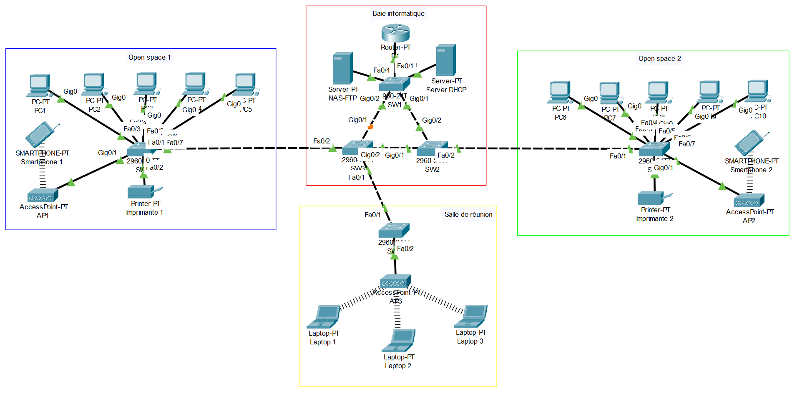

Alexis PEREIRA
Projet 2 - Conception d’une infrastructure réseau
Introduction
Ce projet a pour but la conception d'une infrastructure réseau simulée sous Cisco Packet Tracer, intégrant plusieurs notions clés : la segmentation en VLANs, le routage inter-VLAN et l'attribution automatique d'adresses IP via un serveur DHCP centralisé
Objectifs du projet
- Concevoir une architecture réseau d’entreprise cohérente
- Assurer la segmentation logique du réseau avec des VLANs
- Permettre une attribution d’adresses IP dynamique avec un serveur DHCP
- Rendre le réseau résilient face aux pannes via STP
Matériel & Outils
- Simulateur réseau : Cisco Packet Tracer
- Switchs et routeurs Cisco (virtuels dans l’outil)
- PCs et serveur DHCP simulés dans l’environnement
- Documentation Cisco pour les commandes de configuration
- Fiche de procédure détaillant toutes les étapes
- Schéma de topologie réseau
Étapes de réalisation
- Conception du schéma réseau logique avec identification des VLANs
- Création et attribution des VLANs sur les switchs
- Configuration des trunks et des ports access
- Création des sous-interfaces sur le routeur pour le routage inter-VLAN
- Ajout et configuration du serveur DHCP dans un VLAN dédié
- Ajout de commandes sur les sous-interfaces pour permettre le relay DHCP
- Implémentation de la redondance via STP (Spanning Tree Protocol)
- Tests de connectivité, de distribution IP, et de filtrage réseau
Documents
Voici la fiche PDF détaille chaque étape du projet, depuis la configuration initiale jusqu’aux tests de validation. Elle contient également des captures d’écran et les commandes principales. Ainsi que la fiche synthétique de présentation du projet à présenter à l’épreuve E6 du BTS SIO. Elle contient le contexte, les objectifs, les outils et les productions livrées. Mais également le fichier de l'infrastructure réseau au format .pkt pour Cisco Packet Tracer.
Voir la fiche de procédure Voir la fiche E6 Télécharger le fichier .pkt